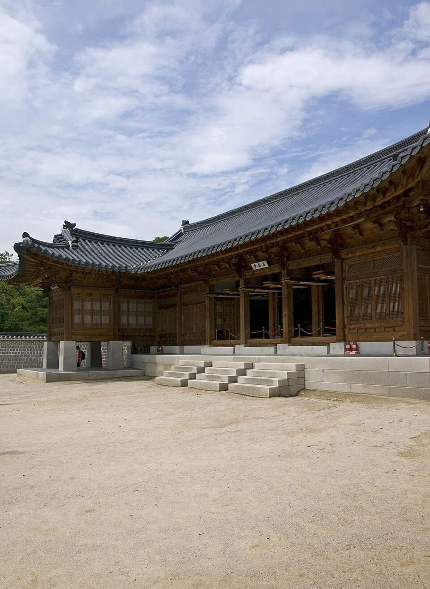
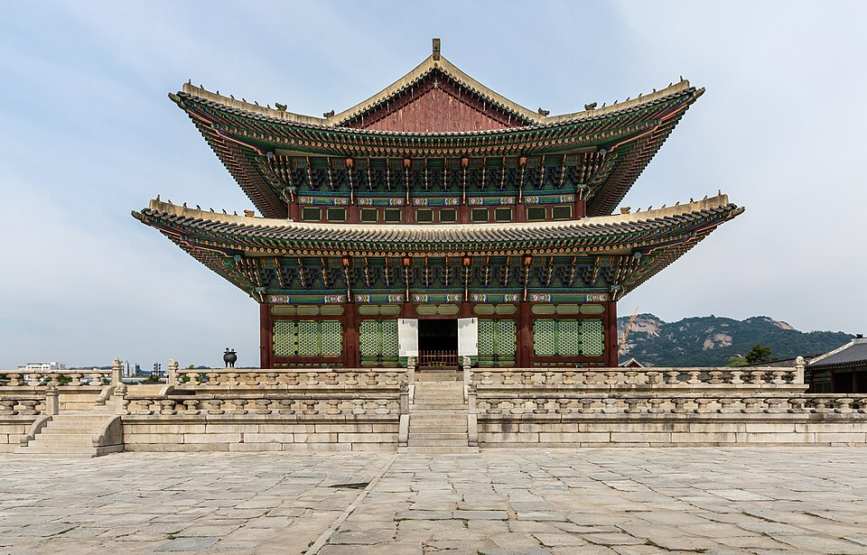
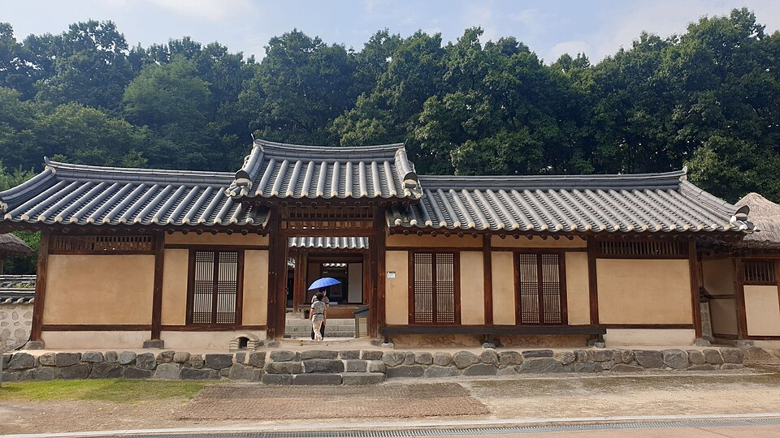

⏱️ 10초 카드 · 개항기 조선 (1851~1895)
열강 사이의 외교을미사변추존 황후
여는 질문 — 강한 나라들 틈에 낀 약한 나라는 무엇으로 자신을 지킬 수 있을까?
이름
한국어명성황후
원어明成皇后
실제 발음명성황후 (시호)
로마자Myeongseong Hwanghu
영어권Empress Myeongseong (Queen Min)
별칭민비(낮춰 부른 말 — 권장하지 않음)
왜 이 사람인가
이 도감에서 명성황후는 '약소국의 외교'라는 어려운 문제를 보여 줘요. 군사력이 약한 나라가 열강 사이에서 살아남으려면, 한 나라에 기대지 않고 여러 세력을 맞붙여 균형을 잡아야 했죠. 그녀의 정치에 대한 평가는 지금도 갈리지만 — 한 나라의 왕비가 외국 세력에게 궁 안에서 살해됐다는 사실은, 그 어떤 평가보다 무겁게 그 시대의 위기를 말해 줘요.
생애
조선 고종의 왕비예요. 나라가 외세에 흔들리던 개항기에, 강한 나라들 사이에서 외교로 균형을 잡아 나라를 지키려 애썼어요. 특히 일본의 힘을 견제하려 러시아 등과 가까이 지내려 했지요.
그 때문에 일본의 표적이 되었어요. 1895년, 일본 세력이 경복궁에 침입해 왕비를 시해하는 끔찍한 사건(을미사변)이 벌어졌어요. 한 나라의 왕비가 외세에 살해됐다는 사실은 조선이 처한 위기를 그대로 보여줘요.
세상을 떠난 뒤 대한제국이 세워지며 '명성황후'로 높여 불리게 되었어요. 그의 정치에 대한 평가는 지금도 갈리지만, 그 죽음만큼은 우리 근대사의 깊은 상처로 남아 있어요.
자료로 보기 — 유묵·사진



남긴 말
“왕비는 우아하고 명민했으며, 정치에 깊이 관여하는 사람이었다.”
조선을 여행한 영국 지리학자 이사벨라 버드 비숍이 왕비를 만난 뒤 남긴 인상 — 그녀 자신의 말이 아니라 관찰 기록이에요. · 출처: 이사벨라 버드 비숍 『한국과 그 이웃들』(요지)
“그날 새벽, 무장한 자들이 궁으로 몰려들었다.”
을미사변 당시 궁에 있던 외국인(러시아인 사바틴·미국인 다이 등)이 남긴 증언의 요지 — 사건은 외국인의 눈으로도 기록됐어요. · 출처: 을미사변 외국인 목격 증언(요지)
연표
- 1851출생
- 1866고종의 왕비로 책봉
- 1895을미사변 — 경복궁에서 시해
- 1897대한제국 수립 후 '명성황후'로 추존
생애의 길 — 여주에서 경복궁까지 🗺️
여흥 민씨의 딸에서 조선의 왕비로, 그리고 궁 안의 비극으로. 좁은 반경 안에 한 시대의 위기가 담겨 있어요.
현재 지도 위 표시예요. 경기·서울의 좁은 반경 안에서 한 사람의 삶이 펼쳐졌지만, 그 중심의 경복궁에서 벌어진 일은 나라 전체의 운명을 흔들었어요.
빛과 그림자외교로 나라를 지키려 한 노력과, 권력을 둘러싼 평가의 엇갈림이 함께 있어요. 비극적인 죽음이 그 모든 논쟁을 덮어선 안 되고, 사실을 차분히 봐야 해요.
더 깊이 (고등·일반)
열강 사이에서 균형을 잡다
명성황후가 살던 때, 조선은 일본·청·러시아·서구 열강이 서로 잇속을 다투는 한복판에 있었어요. 그녀는 어느 한 나라에 휘둘리지 않으려, 특히 점점 거세지는 일본의 힘을 견제하려 러시아 등 다른 세력과 가까이 지내는 외교를 폈죠. 무기가 아니라 '세력 균형'으로 나라를 지키려 한 전략이었어요.
참고: 개항기 조선 외교 일반
평가가 갈리는 정치
그녀에 대한 평가는 지금도 엇갈려요. '외교로 나라를 지키려 한 현명한 정치가'로 보는 시선이 있는가 하면, 친족(여흥 민씨)을 요직에 앉히고 권력을 둘러싼 다툼에 깊이 관여했다는 비판도 있죠. 이 카드는 어느 한쪽으로 단정하지 않아요 — '비극적 죽음'과 '정치적 평가'는 분리해서, 사실을 차분히 보는 게 중요하니까요.
참고: 명성황후에 대한 평가 논쟁 일반
을미사변 (1895) — 궁 안의 비극
1895년 10월, 일본 공사 미우라의 지휘 아래 일본인들이 경복궁에 침입해 왕비를 시해하는 끔찍한 사건이 벌어졌어요(을미사변). 한 나라의 왕비가 외국 세력에게 자신의 궁 안에서 살해된 거예요. 이 사건은 국제적으로도 큰 충격을 줬고, 조선이 얼마나 위태로운 처지였는지를 그대로 드러냈죠.
참고: 을미사변(1895) 일반
죽음 이후 — '명성황후'로 추존
사건 직후 고종은 러시아 공사관으로 피신했고(아관파천), 1897년 대한제국이 세워지면서 세상을 떠난 왕비는 '명성황후'로 높여 불리게 됐어요. 살아서 풀지 못한 위기를 죽어서야 '황후'라는 이름으로 마주하게 된 셈이죠. 그 죽음은 이후 항일 의병이 일어나는 한 계기가 되기도 했어요.
참고: 아관파천·대한제국·추존 일반
신화가 아니라 사람으로 — '여우사냥'이라는 말
을미사변을 일본 측이 '여우사냥'이라 불렀다는 이야기가 널리 알려져 있어요. 이런 표현은 한 인간을, 그것도 한 나라의 왕비를 '사냥감'으로 깎아내린 잔인한 말이죠. 우리는 그녀를 무조건 미화할 필요도, 반대로 신화화할 필요도 없어요 — 다만 한 사람이 그렇게 비인간적으로 살해됐다는 사실 앞에서, 역사를 정직하게 기억하면 돼요.
참고: 을미사변과 그 표현 일반
사람의 그물 — 함께 읽을 인물
이 인물이 나오는 이야기
더 공부하기 — 여기서 출발하세요
📚 책으로
- 명성황후, 제국을 꿈꾸다 ↗신화를 걷어내고 사실로 다가가려는 평전.
- 한국과 그 이웃들 ↗ · 이사벨라 버드 비숍당대 조선을 여행한 영국인의 기록 — 왕비를 만난 장면도 담겼어요.
📜 1차 사료
- 을미사변 외국인 목격 증언궁에 있던 러시아인 사바틴·미국인 다이 등이 그날을 증언했어요.
🎬 영상으로
- KBS 역사저널 그날 〈명성황후 시해 사건, 우리가 몰랐던 이야기〉 ↗🟢 KBS 역사 다큐 — 을미사변을 차분히 사실 중심으로 짚어요(한국어).
📍 가 볼 곳
- 경복궁 건청궁·옥호루 (서울) ↗왕비가 시해된 바로 그 자리.
- 홍릉 (남양주)고종과 함께 모셔진 능.